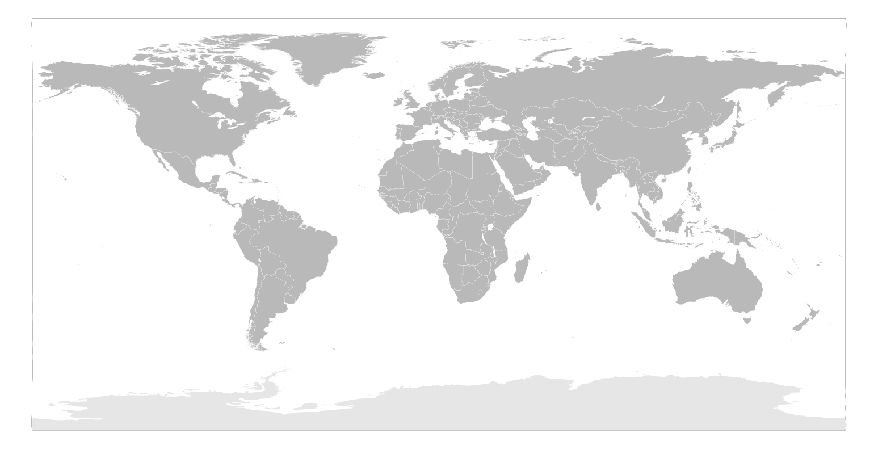

Sept 2026
Dyeing & finishing operational
25 tonnes/day dyeing and finishing capacity comes online at the Landsun Group plant in Vietnam.
Dyeing and finishing only — knitting is not planned for this site
Fabric is inspected, rolled and container-loaded in Changshu, 90 km from the Port of Shanghai. Whether it goes to a cut-and-sew partner in Ho Chi Minh City or a distribution centre in the United States, it leaves from the same floor that made it.

Forward-looking, not live today — dated so buyers can plan around it.
25 tonnes/day dyeing and finishing capacity comes online at the Landsun Group plant in Vietnam.
The Vietnam plant scales to 50 tonnes/day dyeing and finishing capacity, matching the same QC standard as Changshu.
A fragmented chain gives you four suppliers, four schedules and four explanations. Sourcing dye and finish from one company removes the handoffs, the duplicated QC and the queueing between companies — and it puts one team on the hook for the ship date.